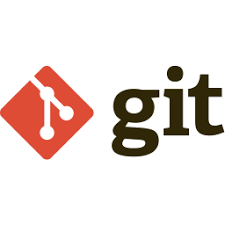
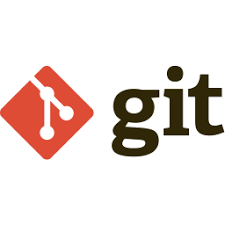
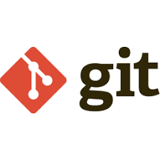

Meus Conhecimentos:

 
 


Me chamo André Aulucci Gomes, tenho 23 anos, nasci e cresci na zona leste de São Paulo. Fui funcionário de uma empresa de cobrança durante 4 anos e 6 meses, onde pude conhecer pessoas com perfis diferentes de liderança e consegui aprender bastante com cada uma delas, contribuindo de forma contundente na pessoa que me tornei hoje. Durante esses anos de empresa, tive um contato (mesmo que mínimo) com a área de sistemas e desde então fiquei apaixonado por essa profissão, ingressei na faculdade e realizei o curso de Análise e Desenvolvimento de Sistemas que foi concluido em Dezembro/2022.
Durante a faculdade fiz cursos de HTML5, CSS3, JavaScript, Git, GitHub, Algoritmos, Linux e pretendo me especializar na linguagem Python.
